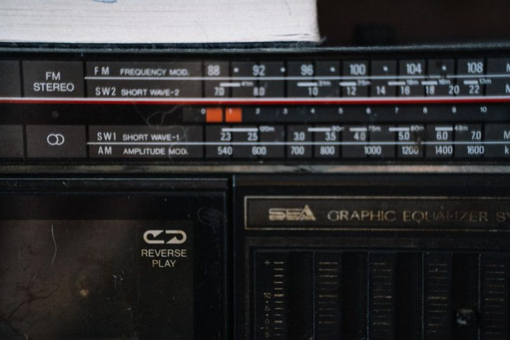

Twelve Metres of Wire, and What It Actually Hears

The wire runs from a porcelain standoff on the fence post, over a lilac bush that never quite gets pruned in time, to a screw eye driven into the downspout bracket eleven feet up. Twelve metres, measured with a fibreglass tape on a Sunday when the ground was dry enough to walk the whole run without sinking. It is not an antenna anyone would draw up on purpose. It is the antenna that fit the yard, and after four months of logging what comes through it, the honest answer is: it hears more than it has any right to, and less than the spec sheet for an end-fed half-wave would promise. Both things are true, and the gap between them is the actual subject of this log.
The Wire Itself
Twelve metres of stranded 18-gauge, insulated, fed at the fence-post end through a small unun into a length of coax that ducks under the deck rail and comes up through a hole drilled in the sill plate. No tuner box, no elevated radial field — just a single 4-metre counterpoise dropped along the base of the fence, because that was the wire left over after the run was cut. It is, by any strict definition, a random wire wearing an end-fed's clothing, and it behaves that way: usable across a spread of bands, resonant on none of them, and quietly dependent on the ground underneath it doing more work than the wire itself.
The Hour-by-Hour Window
What surprised me wasn't which bands came in — it was how narrow the window was for each one. Early morning, before the sun is properly up, the 49 metre region carries voices that vanish an hour later. Midday belongs to almost nothing; the noise floor climbs, the sky absorbs what little the wire was catching, and the log for that stretch is mostly blank pages with a time stamp and a shrug. Then, in the hour on either side of sunset — the window covered in more detail on the grayline piece — the wire does its best work of the day. Signals that were buried at noon sit at a readable level for twenty, thirty minutes, then fade back into the noise as the terminator moves past.
A wire that fits the yard beats a wire that fits the textbook, because the one in the textbook never actually goes up.
What Twelve Metres Actually Favors
Below is the honest tally from four months of evening sessions, not a manufacturer's coverage chart. The numbers are rough — a hand-logged S-meter reading is an opinion, not a measurement — but the pattern across a hundred-odd sessions holds steady enough to write down.
| Local Time | Band Region | Typical Reading | Character |
|---|---|---|---|
| 06:00–07:15 | 49 metres | S6–S8 | Strong but short-lived |
| 11:00–15:00 | 41 metres | S1–S3 | Mostly noise floor |
| 18:10–18:55 | Grayline mix | S5–S9 | Best window of the day |
| 21:00–23:30 | 31 / 41 metres | S4–S7 | Steady, some flutter |
| 02:00–04:00 | 60 metres | S2–S5 | Thin but present |
The one adjustment that mattered
Moving the coax run away from the downspout's metal bracket, and adding a common-mode choke at the feed point, cut the steady background hiss by roughly one S-unit on most bands. The wire itself never changed; the ground path around it did.
The Trouble With a Downspout
Anchoring a wire to a downspout sounds harmless until the first evening a nearby appliance clicks on and a wash of hash rolls across every band at once. The metal gutter system is bonded to the house wiring in ways no one draws on a permit diagram, and a wire terminated a few centimetres from it picks up whatever noise rides that bond. Some of it went away with a ferrite choke near the feed point. Some of it just has a schedule — it shows up around 19:00 and quits by 20:30, and the log now notes it as "downspout hum" rather than pretending it's ionospheric. That distinction matters more than it sounds; a session spent troubleshooting the wrong noise is a session wasted, a point worth reading alongside the piece on separating noise from propagation before blaming the radio.
A Week of Honest Logging
A few things this stretch of wire is not good at, worth saying plainly rather than glossed over:
- — It does poorly above roughly 25 metres; the run is simply too short and too low to load efficiently up there.
- — It is noisy on damp evenings, when the downspout carries more than rain.
- — It cannot be aimed. Whatever direction the fence post happens to favor is the direction it hears best, and that was decided by where the posts already stood.
- — It rewards patience over power. The catches worth writing down came from sitting through the dull stretch of the afternoon, not from any single clever fix.
Why the Card Still Matters
None of the numbers above prove anything by themselves. An S-meter reading scribbled at 18:40 is a memory, and memories drift. What turns a log entry into something worth keeping is the confirmation that eventually comes back — a card, a form reply, a note that the station on the other end actually sent what was heard, at the time it was logged. A twelve-metre wire between a fence post and a downspout will never win an award for engineering, but a shelf of confirmed entries is a more honest measure of what it does than any prediction chart, and that's really the only claim this log makes.